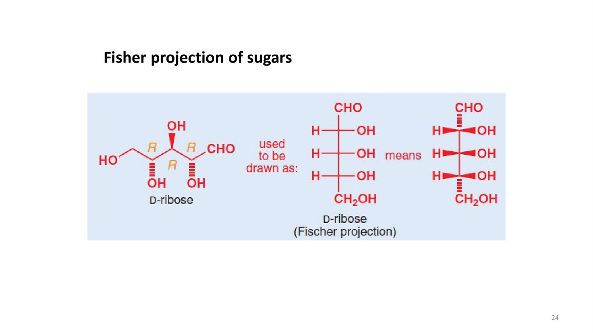

CHE105 · 第 9 章
立体化学
Stereochemistry
虚线下划线为术语；悬停查看中文、英文与释义，完整词典见“术语”。
本章目录
本讲从“同分异构”分出立体异构，把“不能重叠的镜像”定义为手性，再用旋光性、CIP 规则与 R/S 标记把三维结构写成可判读的符号，最后处理两个手性中心带来的非对映体与内消旋体。
本章要点
- 结构异构体原子连接方式不同；立体异构体连接方式相同、空间取向不同。
- 手性分子与其镜像不能重叠；分子必须不对称（asymmetric）才可能成对存在。
- 对映体的物理性质完全相同，只有对平面偏振光的旋转方向相反；等量混合即外消旋体，不旋光。
- R/S、(+)/(−)、D/L 是三套独立标记，R 构型不能推出旋光方向。
- CIP 规则按原子序数排优先级，双键按“连两个该原子”处理，同位素按质量排。
- 判定 R/S：最低优先级基团背向观察者，1→2→3 顺时针为 R、逆时针为 S。
- 非对映体是不是对映体的立体异构体；两个手性中心可产生内消旋体（meso），分子整体不手性。
9.1 异构体的两个层级
讲义先把“同分异构”拆成两层。结构异构体structural isomers是分子式相同、原子连接方式不同的分子；立体异构体stereoisomers是原子连接方式相同、基团在空间中的取向不同的分子。这个区分决定了后面所有讨论的范围：立体化学不改变“谁和谁相连”，只改变“相连的基团朝哪个方向”。
最直观的立体异构是几何异构geometric isomers，讲义用 2-丁烯示范：双键不能自由旋转，两个甲基可以在双键同侧（顺式）或异侧（反式），于是同一连接方式对应两个不同的分子。第 7 章讲视黄醛的光致异构化时，用的就是这套语言（Z/E）。
讲义的下一页给出另一类立体异构的触发条件：当一个碳连着四个不同的基团时，这个碳就成为立体异构的来源。为什么“四个不同”这么关键，是下一节的内容。
L9 p.2
9.2 手性：不能重叠的镜像
把分子与它的镜像放在一起，如果两者能完全重叠，它就是非手性的；如果怎么转都重叠不上，这对分子就互为对映体enantiomer。讲义的定义是：光学异构体（optical isomers）是彼此为镜像、且不能重叠的一对分子；分子必须不对称（asymmetric）才能以一对光学异构体的形式存在，这种分子称为手性分子chiral molecule。
“四个不同基团”正好提供这种不对称：若四个基团中有两个相同，把分子翻转过来就能与镜像重合；四个都不同时，翻转后总有一对基团的位置对不上，镜像无法重叠。讲义举的实例是 3-甲基己烷与丙氨酸（alanine）的光学异构体——两者都在一个碳上挂了四个不同基团。
讲义用左右手作类比：左手与右手是镜像，但戴同一只手套时无法互换。这个类比的要点不是“形状像手”，而是“镜像关系 + 不可重叠”这两条同时成立。若只有镜像关系而能重叠（如一个球对称分子），就不构成手性。
L9 p.3–4
9.3 旋光性：唯一可测的差别
对映体的物理性质完全相同——熔点、沸点、溶解度、NMR 谱、IR 谱都一样。讲义用 (S)-丙氨酸与 (R)-丙氨酸说明：两者的 NMR 与 IR 完全一致；唯一差别是让平面偏振光通过溶液时，一个把光向右旋，另一个向左旋，且旋转角度相同。等量的两者混合（外消旋体racemic mixture）则完全不旋光，因为两个相反的旋转互相抵消。
能旋转平面偏振光的物质称为旋光性optical activity物质，测量仪器是旋光仪polarimeter。向右（顺时针）旋的记作右旋dextrorotatory，向左（逆时针）旋的记作左旋levorotatory，分别用 (+) 与 (−) 表示。
化学性质上，对映体只在手性环境中才表现出差别：与手性试剂反应、在手性催化剂上反应、或作用于手性受体时，两个对映体的行为不同；在非手性环境中则完全一样。这条结论是药物化学里“两个对映体药效不同”的根源，也是讲义强调“手性环境”四个字的原因。
Clean vector diagram of optical activity: unpolarized light passing through a polarizer to become plane-polarized, then through a sample cell, with two separate output panels showing the plane rotated clockwise for the dextrorotatory enantiomer and counterclockwise by the same angle for the levorotatory enantiomer, and below a racemic mixture panel showing no net rotation. Flat 2D, thin 1.5 px strokes, muted slate blue and warm grey palette, white background, English labels, no cartoon, no gradient, no shadow.
L9 p.5–6
9.4 三套标记：R/S、(+)/(−)、D/L
讲义把三套命名并列，并强调它们来自不同的观测：R/S 来自对空间排布的几何判定；(+)/(−) 来自旋光仪测出的旋转方向；D/L 来自与参照物（甘油醛、氨基酸等）的结构关联。三套标记描述的是三件不同的事，因此不能互相推导。
最关键的一句是：一个分子具有 R 构型，并不能提示它是 (+) 还是 (−)，也不能提示它被标为 D 还是 L。旋光方向是实验测得的物理量，构型是人为规定的几何标签，两者之间没有固定对应。讲义把“给立体中心指定 R/S 构型”列为本模块的明确要求，说明考试重点是构型判定而不是旋光符号。
L9 p.7
9.5 手性中心从哪里来：氰化物对醛的加成
讲义用一个反应把“手性”从静态结构带到反应里：醛与氰化物（cyanide）反应。氰离子cyanide ion可以从前脸进攻羰基碳，也可以从后脸进攻；两条路径经过能量相同的过渡态，但生成的产物互为镜像，是两个不同的分子。于是这个反应给出一对对映体，而不是一个产物。
反应机理的文字步骤是：① 氰离子以孤对进攻羰基碳，C=O 的 π 电子推向氧，形成四面体醇盐中间体；② 氧负离子夺取质子（来自 HCN 或水），得到氰醇（cyanohydrin）。画箭头时，第一支箭头从氰的碳上孤对指向羰基碳，第二支从 C=O 的 π 键指向氧。产物碳上连有 OH、CN、H 与 R 四个不同基团，因此成为新的手性中心。
若把底物换成羰基两侧相同的醛（或甲醛），进攻后得到的碳上会有两个相同基团，产物不再手性——讲义用“not a chiral product / achiral”点出这个对照。这说明手性不是反应类型带来的，而是产物碳上四个基团是否全不同决定的。
讲义还提醒：σ 键可以自由旋转（sigma bond can do free rotation）。这条看似无关的话，作用是把“构象异构”排除在立体异构之外——单键转出来的不同形状不算立体异构体，只有不能靠旋转互变的空间排布才算。

L9 p.8–13
9.6 CIP 规则：给四个基团排队
Cahn–Ingold–Prelog 规则Cahn–Ingold–Prelog rules（CIP）用来给手性中心的四个基团排优先级，共四条：
- 规则 1（原子序数）：比较直接连在手性中心上的原子，原子序数越大优先级越高，例如 O > N > C > H。
- 规则 2（逐层比较）：若第一层原子相同，沿链往外走，直到出现差异；第一个出现差异的位置上原子序数更高者优先。
- 规则 3（重键展开）：双键、三键按“单键连了同样数目的该原子”处理。例如 C=O 视为该碳连了两个氧，C≡N 视为连了三个氮。
- 规则 4（同位素）：同位素按原子质量排，质量大者优先，例如氘（2H）> 氕（1H）。
规则 3 是最容易漏的一条：醛基 −CHO 与 −CH2OH 比较时，前者按“C 连 (O, O, H)”、后者按“C 连 (O, H, H)”处理，所以 −CHO 优先。规则 2 的“逐层”也很关键：不能只看第一个原子就下结论，要一层一层比到出现差异为止。
L9 p.15
9.7 判定 R/S：把最低优先级放到背后
排好 1、2、3、4 之后，判定只有一个动作：让优先级最低的基团（4 号）背向观察者，然后从 1 看到 2 再到 3。顺时针为 R（rectus，右），逆时针为 S（sinister，左）。
讲义的示例页把这个动作拆成两种情形：若 4 号已经在背后（虚线），直接从正面看 1→2→3 判断；若 4 号朝向观察者（楔形），则从背面看，或等价地把结论反转。讲义的原话是“look from the backside, 1-2-3 clockwise: R”与“look from the front, 1-2-3 anticlockwise: S”，两种视角得到的是同一个结论。
把流程固定成四步，可以避免考场上的低级错误：① 确认这是手性中心（四个基团全不同）；② 按 CIP 排出 1–4；③ 把 4 号转到背向；④ 读 1→2→3 的旋向。第三步若转动了整个分子，要注意其余三个基团的相对位置也随之改变。
Clean vector instructional diagram of R/S assignment: a central carbon drawn as a tetrahedron with four substituents labeled 1 to 4, substituent 4 on a dashed bond pointing away, a curved arrow from 1 through 2 to 3 marked clockwise and labeled R, a second panel with 4 on a wedge pointing toward the viewer and the same 1-2-3 sequence marked anticlockwise labeled S, and a small side note listing the four CIP priority rules as numbered lines. Flat 2D, thin 1.5 px strokes, muted slate blue and warm grey palette, white background, English labels, no cartoon, no gradient, no shadow.
L9 p.16–17
9.8 两个手性中心：非对映体与内消旋体
分子里有两个手性中心时，每个中心各有 R/S 两种可能，组合起来有四种排布。其中两两成镜像的对子叫对映体；非对映体diastereoisomer的定义是：不是对映体的立体异构体（讲义注明非对映体可以是手性的，也可以是非手性的）。
酒石酸的例子把这条定义推到极端。 (1R,2S)-酒石酸与 (1S,2R)-酒石酸看起来像一对对映体，实际上它们是同一个分子：把其中一个在纸面上旋转 180°，两个结构完全重合。原因是分子内部存在一个镜面，两个手性中心的构型互相抵消，整个分子是非手性的。这类含手性中心但整体非手性的分子叫内消旋体meso compound。所以酒石酸只有三种立体异构体：一对对映体（R,R 与 S,S）加一个内消旋体。
三个手性中心的情形同理，只是组合更多。讲义的示例页用多个立体中心的结构练习判定，目的不是背数目，而是养成“先逐个中心定 R/S，再看整体是否有镜面”的习惯。
L9 p.18–22、p.25
9.9 Fischer 投影与天然手性分子
糖类与氨基酸多用 Fischer 投影Fischer projection表示。它的约定是：竖直键向纸面后方弯，水平键向纸面前方伸出；因此整张图不能随意翻转，只能在纸面内旋转 180°（转 90° 会把前后关系颠倒，得到的是对映体）。讲义通过半缩醛（hemiacetal）的环化与糖的 Fischer 投影，把“直链构型”与“环状构型”对应起来。
天然界的手性是有偏向的。讲义指出：大多数氨基酸是手性的，甘氨酸（glycine）例外——因为甘氨酸的 α 碳上连了两个氢，不满足“四个不同基团”。此外自然界还存在一些手性羟基酸。这些例子说明手性不是罕见现象，而是生物分子的常态；也说明为什么药物分子的一对对映体在体内会有不同表现（9.3 的“手性环境”）。
把整章收束成一句：立体化学要解决的问题是“同一个连接方式能有几种空间排布，如何命名，如何判定”。工具是手性判据、旋光测量、CIP 排序与 R/S 标记；容易出错的地方是把手性中心数当成手性判据，以及把 R/S 与旋光方向混为一谈。

L9 p.14、p.23–24、p.26–28